Rich's digital garden
Major Oak & Sherwood
Hello Roadside Picnic subscribers. This week’s issue comprises notes on how folklore and narrative can transform a landscape with photos from Sherwood forest’s rewilded former visitor centre.
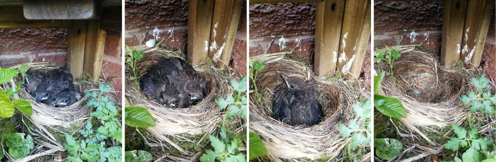Blackbirds left the nest this week
{kind=link}
The Major and his tree
Late 18th century: a retired royal artillery officer, Major Hayman Rooke, pursuing antiquities in later life selected a "curious ancient oak" for inclusion in his book of remarkable oaks. The tree, a hollow giant, is situated in a grove of broadleaf woodland, the remnants of the royal forest, Sherwood Forest.
I think no one can behold this majestic ruin without pronouncing it to be of very remote antiquity; and might venture to say, that it cannot be much less than a thousand years old. 🛈
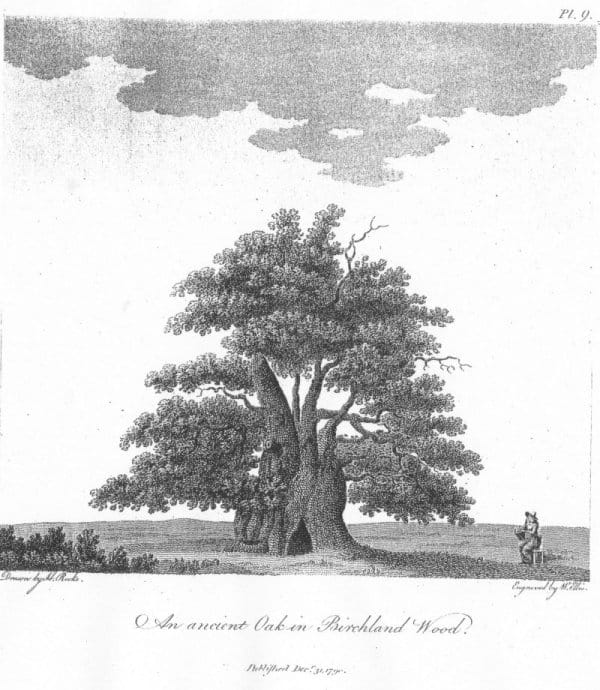Rooke’s illustration
{kind=link}
Later, the oak's various names were disregarded in favour of Rooke's title as the Major Oak. This is an acknowledgement of Rooke's recognition and appropriation of the tree by regarding it alongside others at the ducal estate Welbeck park.
Victorians were obsessed with antiquity. They ate up Rooke's words designating the oak as an ancientandmajestic ruin.The tree became a tourist attraction. Postcards were made, photographs were taken, and guidebooks were written. In doing so, a narrative of folklore romanticism was enforced.
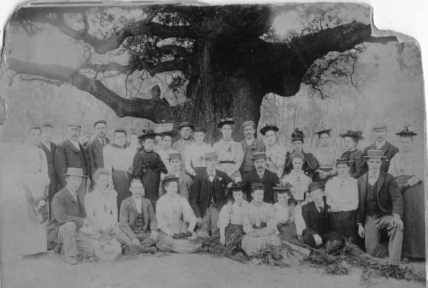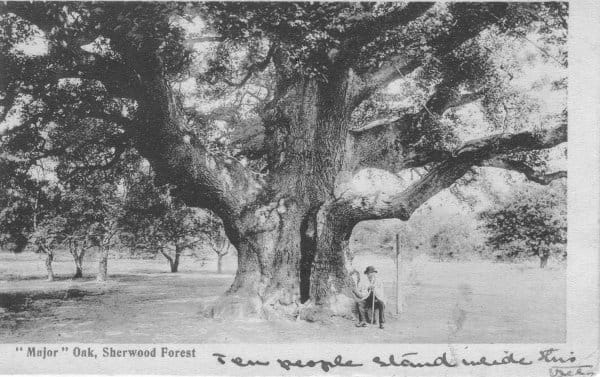Historic images from eyemead.com
{kind=link}
{kind=link}
This guidebook, published 1874, is an example of the emphasis on folklore and awe of the size of the tree, the author writing-
Between Budby and Edwinstowe is to be found the Major Oak which has a circumference of 30 feet and that of the branches its greatest extent of 240 feet; seven people are said to have dined in at once. Robin Hood's Larder is another fine example of old life which will hold a dozen people inside. It is sometimes called "The Slaughter Tree", from the fact that Hooton, a noted sheepstealer, used to hang up the carcases of the sheep inside. 🛈
While the oak known as Robin Hood's Larderfell in a gale in 1960, the weight of the generated folklore (or fakelore)and tourism required the Major oak to be supported and protected. A series of scaffolding poles were erected around its thick boughs. Later, it was enclosed by a fence to protect its root system from footfall.
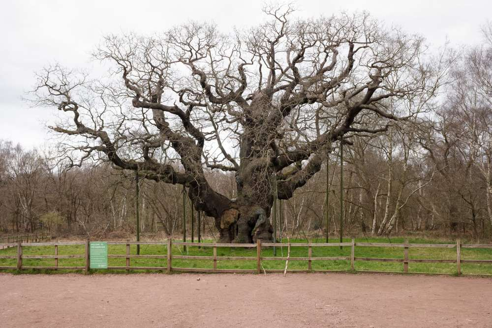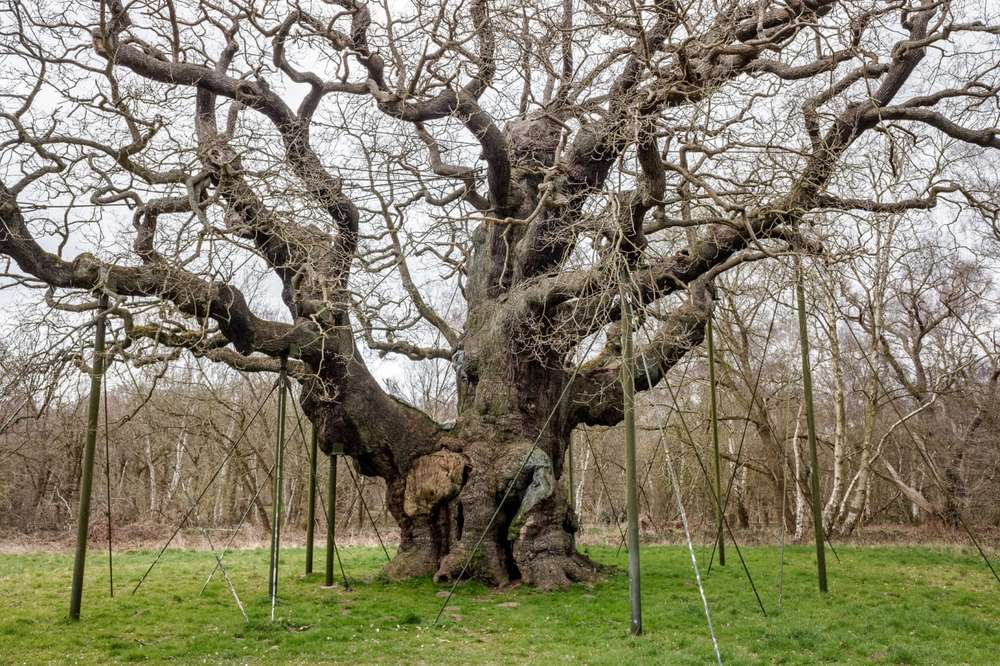This is how I remember the Major oak and the park as a child. Complete with a small visitor centre comprising of car parks, a gift shop, a cafe and an activities centre. All of which were covered in Robin Hood paraphernalia.
{kind=link}
{kind=link}
Fragments of the old management are still visible. Rooke's romantic antiquarian language resonates on the information boards alongside folklore derived from Victorian guidebooks. Sculptures of small houses, carved from tree stumps, that use to dot the paths, playing to Victorian-style supernaturalism, are now left to rot. The previous management enforced a backwards-looking connection to the past, operating to tourism.
A new partnership with the RSPB has established a contemporary forward-looking attitude. There is a new £6m visitor centre and car park situated outside of the woodland. The old visitors centre and car park are now reverting to wood and moorland, transforming the landscape, and extending natural habitats.
Unlike ruins found within marginal spaces, the conversion has been managed and through with buildings removed. Small clues still exist, triggering childhood memories. The trees, that I remember being surrounded by infrastructure are now situated in seemingly natural environments. I notice a herd of muntjac deer browsing the forest floor in silence. In the quiet moment, observing them, the site appears wild. This is an illusion though. Aside from the deer being non-native, this reclaimed landscape is not wilderness or cultivated, or horticultural but a complex fourth nature of management through conservation. Hidden behind centuries of management enforcing an agency of arboriculture and folklore led tourism, the illusion of a natural environment extends to the whole woodland. Evidence extends from the equally spaced ancient oaks, some of which display signs of pollarding, to the contemporary efforts of conservation.
Reverting the defunct visitor centre to a natural agency is a continuation of management under Major Hayman Rooke's interpretation of the space surrounding his majesticoak as a beautiful wood.
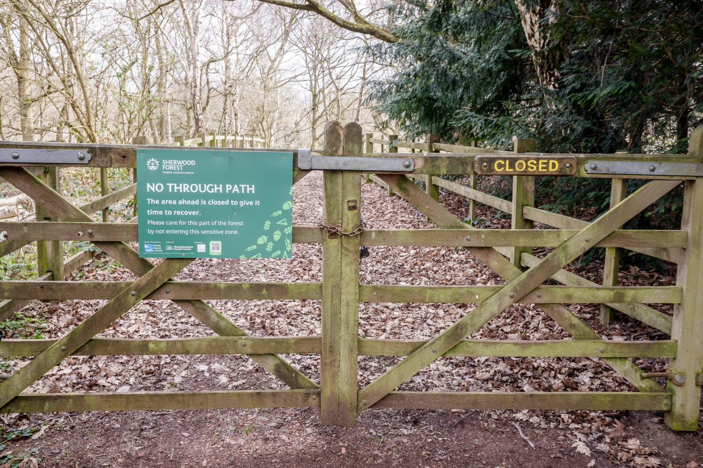Path that use to lead to the centre.
{kind=link}
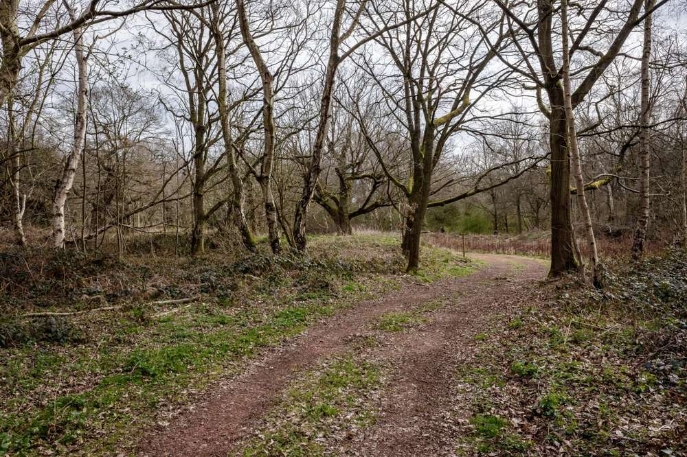Where the centre use to be.
{kind=link}
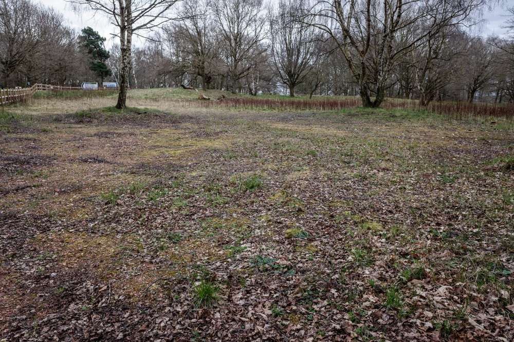Remains of the car park,
{kind=link}
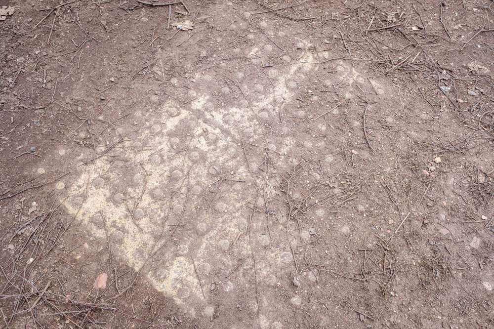The pedestrian crossing of the car park.
{kind=link}
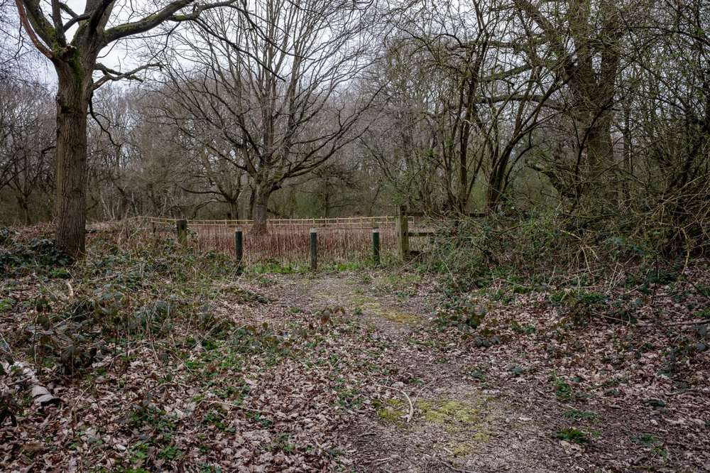Another lost enterence to the centre.
{kind=link}
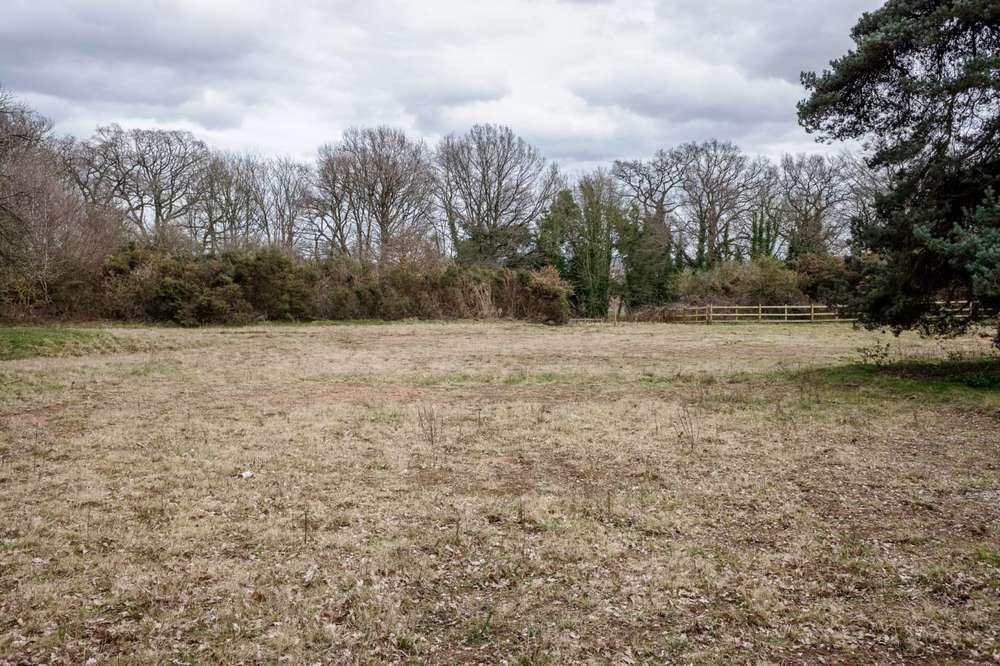The park, now grass.
{kind=link}
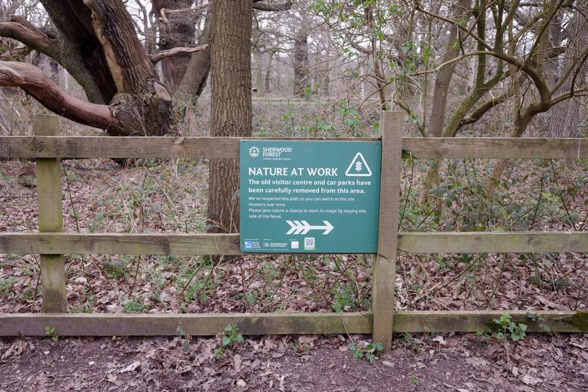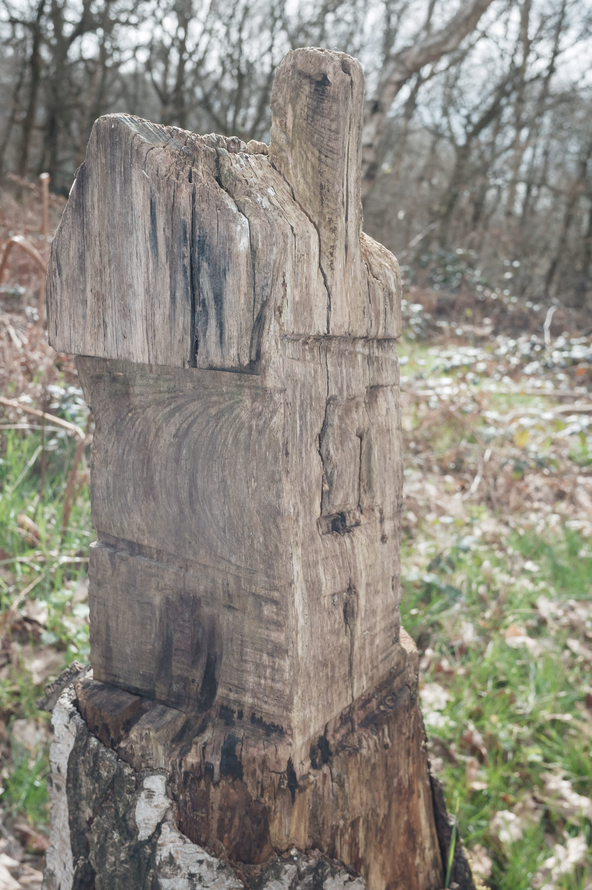These tree carvings use to dot the visitor centre. Most are now weathered.
{kind=link}
{kind=link}
{kind=link}
{kind=link}
Bookmarks
This article is from my newsletter. Consider subscribing, it's free and weekly.
Created
04/04/2021
Topics
Roadside Picnic
History
Research
Landscape